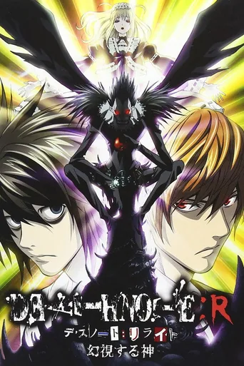

Тетрадь Смерти: Фильм 2007
Ягами Лайт - очень способный ученик японского университета. "Волею случая" к нему попадает могущественный артефакт - "Тетрадь Смерти", вписав туда имя человека (которого нужно ясно представлять себе внешне) запускается механизм, приводящий к смерти вписанного. Оценив масштаб попавшего к нему артефакта, Ягами Лайт становится "Кирой" - хладнокровным убийцей убийц, наказателем проступившихся, влекомый идеей чистого мира, мира без преступлений, в котором видит себя ни мало ни много - Богом нового мира. Противостоять хладнокровному разуму малолетнего правотворца будет японский отдел полиции, возглавляемый его отцом и таинственный L, гениальный следователь, посланный раскрыть загадку Киры. Этот фильм является переосмыслением оригинального аниме-сериала, тщательно отобранный в полнометражную ленту.
Открыть в каталогеДанные и постеры принадлежат их правообладателям. Этот продукт использует TMDB API, но не одобрен и не сертифицирован TMDB.